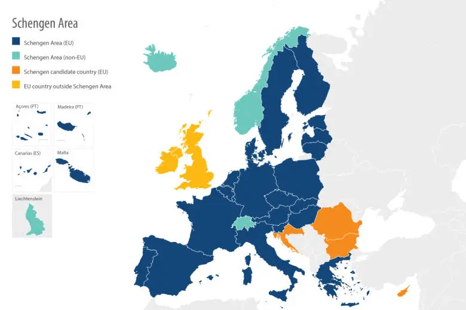

Planning your dream European vacation or business trip? If you're from a country outside the European Union or Schengen area, obtaining a Schengen visa is an essential step to gain entry. Navigating the Schengen visa application process can be complex, but with the right preparation, you can streamline the process and focus on enjoying your travels.
In this comprehensive guide, we'll walk you through key Schengen visa application tips, required documents, and the importance of travel insurance.

1. Understanding the Schengen Visa
The Schengen visa grants access to 27 European countries that make up the Schengen Area, allowing free movement across borders for up to 90 days within a 180-day period for tourism, business, or family visits. Understanding the process is the first step to ensuring a smooth application experience.
2. Gather the Required Documents
Having all the necessary documents ready is crucial. While each Schengen country may have slight variations, the following are generally required:
- Completed Application Form: Make sure to fill out the form accurately.
- Valid Passport: Valid for at least three months beyond your planned departure date from the Schengen Area.
- Passport-Sized Photos: Use our Visa Photo Editor to ensure your photo is compliant.
- Proof of Accommodation: Hotel reservations or invitation letter.
- Proof of Financial Means: Bank statements, pay slips, or employer letter.
- Travel Insurance: Coverage for at least €30,000 in medical expenses and repatriation.
3. Ensure Your Visa Photo Meets Requirements
Schengen visa photos must meet the following guidelines:
- Size: 35mm × 45mm.
- Background: Plain white or light-colored, without shadows or patterns.
- Expression: Neutral expression, mouth closed, eyes open.
- Headgear: Only allowed for religious reasons, and must not cover the face.
Avoid rejection by using our Visa Photo Editor to easily crop and adjust your photo to meet all Schengen visa requirements.
Get your photo right the first time
Use our free Visa Photo Editor — no upload required, all processing local.
Use Our Photo Tool4. Apply at the Correct Embassy or Consulate
Apply at the consulate of the country you plan to visit. If visiting multiple countries, apply at the consulate of the country where you will spend the most time or your first entry point.
5. Schedule Your Appointment Early
Make sure to schedule your appointment 3–6 months in advance of your intended travel date to ensure you can secure a spot in time.
6. Travel Insurance: Don't Overlook This Requirement
Travel insurance is mandatory for all Schengen visa applications. Your insurance must cover:
- Minimum of €30,000 in medical costs.
- Emergency medical expenses and repatriation.
- Coverage for all 27 Schengen countries.
7. Plan Your Finances and Proof of Funds
You will need to show that you have sufficient funds to cover your expenses while in the Schengen Area. This typically means:
- Bank statements from the last three months.
- Pay slips or a letter from your employer confirming your salary and position.
- Sponsorship letter if someone else is covering your expenses.
8. Travel Itinerary and Proof of Accommodation
Submit a detailed travel itinerary with your visa application, including travel dates, countries you will visit, and proof of accommodation for each location (hotel reservations or invitation letter).
9. Submitting Your Application
Submit your paperwork in person. You may be required to provide biometric data, including fingerprints and a photo. Processing times can vary, but generally, it takes 15 working days to receive a decision.
10. Check Your Schengen Visa Status
Once your application has been submitted, you can usually check the status of your visa online through the consulate or visa service website.
Conclusion
Successfully applying for a Schengen visa requires careful attention to detail. Following these steps can help you avoid delays or rejections and make your dream European trip a reality. And for a quick, reliable solution to formatting your visa photos, visit our Visa Photo Editor to make sure your photo is perfectly tailored to Schengen visa requirements.